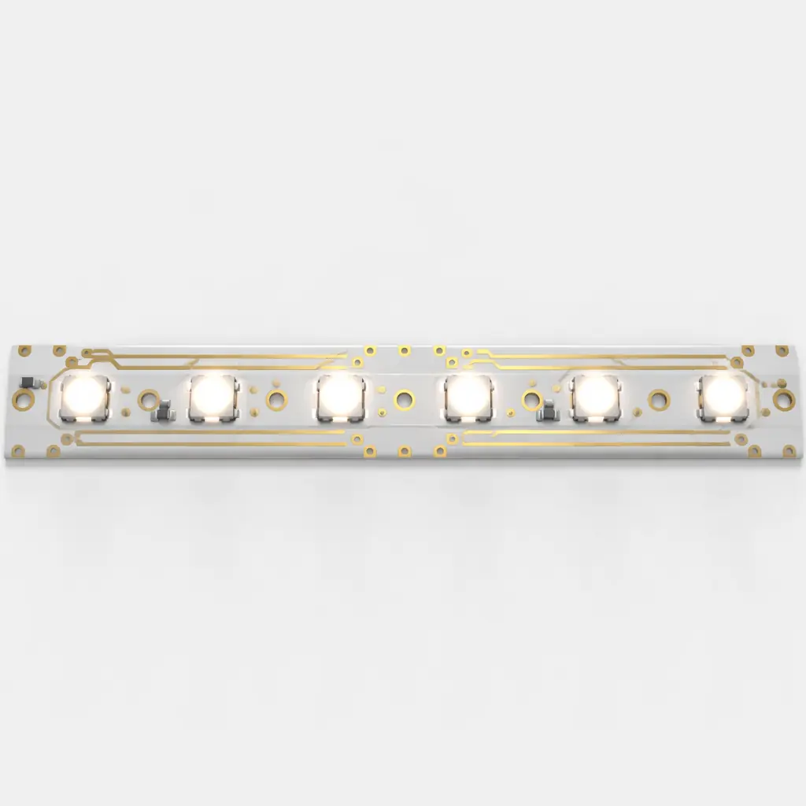
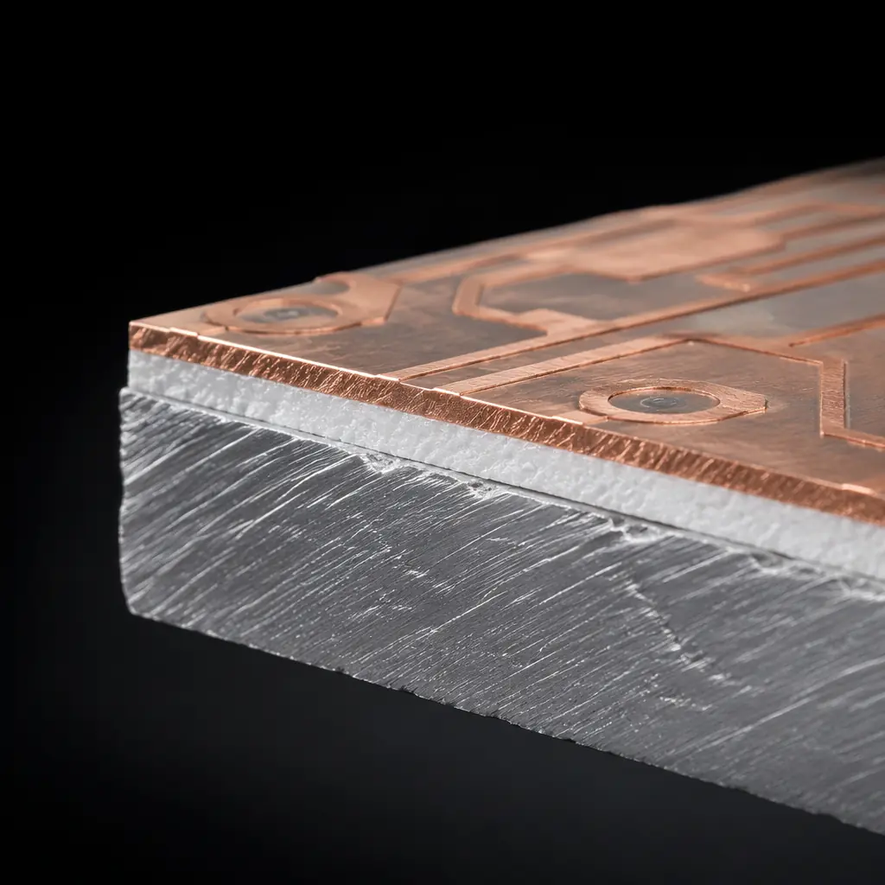
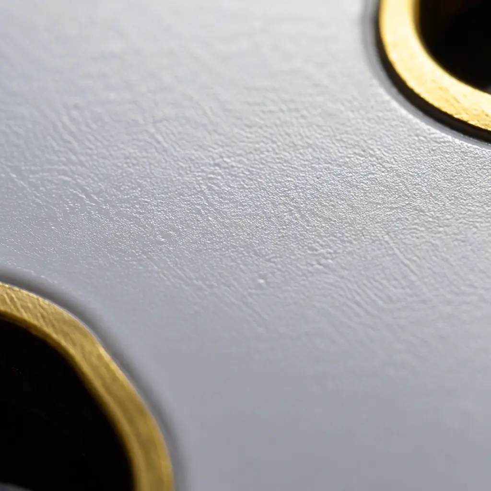

LED lighting is the rare product category where the PCB isn't just a mechanical carrier — it's a primary thermal path, an optical reflector, and a lifetime-limiting element all in one. A Cree XHP70.2 LED running at 12W on a standard FR-4 board with 1oz copper reaches junction temperatures above 135°C within 15 minutes. At that temperature, lumen maintenance drops to L70 in under 5,000 hours — one-tenth the rated 50,000-hour life. The same LED on a well-designed aluminum MCPCB with 2.2 W/m·K dielectric thermal conductivity stabilizes at 85°C junction temperature and delivers the full 50,000-hour L70 rating. The difference is entirely in the PCB substrate, solder mask, and thermal via design — three cost-controllable manufacturing decisions that make or break your product's reliability.
At Huaxing PCBA, we manufacture LED PCBs across all common substrate types — aluminum MCPCB, copper-core, and FR-4 with thermal via arrays — at volumes from 100-piece prototypes to 80,000 m² monthly production. Our facility runs dedicated MCPCB production lines with controlled dielectric lamination and 100% thermal impedance testing. Whether you're designing an architectural linear fixture, an automotive headlamp module, or a horticulture grow-light panel, the PCB decisions in this guide apply.

Quick decision matrix: For LED power under 3W per component, FR-4 with a dense thermal via array and 2oz copper costs $1–3/board — adequate for indicator LEDs and low-power strips. For 3–15W (most commercial LED products), single-layer aluminum MCPCB with 1.5–2.2 W/m·K dielectric at $3–8/board is the sweet spot. For 15–50W (high-bay, stadium, automotive headlamps), upgrade to copper-core or aluminum with 5–8 W/m·K ceramic-filled dielectric ($8–25/board). If your design exceeds 50W per module, you need either direct-bond copper (DBC) ceramic at $30–70/board or a complete thermal architecture rethink.
Why LED PCBs Are a Different Manufacturing Category
Standard PCB manufacturing optimizes for electrical performance — controlled impedance, low dielectric loss, fine-line etching. LED PCB manufacturing optimizes for three entirely different parameters, none of which appear on a conventional PCB datasheet:
Thermal Resistance (Rth) — Not Just "Good Enough," but Quantified
Every 10°C increase in LED junction temperature cuts lumen output by approximately 3–5% and accelerates phosphor degradation, shrinking L70 lifetime exponentially. A standard FR-4 PCB has Rth of 20–40 K/W from pad to ambient — adequate for logic ICs, catastrophic for power LEDs. An aluminum MCPCB with 100μm dielectric layer delivers Rth of 2–5 K/W. The difference: 50°C junction temperature reduction on a 10W LED. Our MCPCB manufacturing process controls dielectric thickness to ±10μm and includes post-lamination thermal impedance testing — not every PCB shop does this, and skipping it means you won't know your board's real thermal performance until field returns start arriving.
Solder Mask Reflectivity — A 5–12% Lumen Efficiency Gain
White solder mask reflects stray LED light back toward the optics, improving total system efficacy. Standard green solder mask reflects approximately 15–20% of visible light; matte white solder mask reflects 85–92%. For a 100W LED streetlight module, that's a 5–12% gain in useful lumens — the difference between hitting and missing a DLC Premium efficiency tier. However, white solder mask yellows under prolonged UV and thermal exposure. High-end LED PCB designs specify UV-stabilized white solder mask with a reflectivity spec that's verified post-cure and post-thermal-aging, not just as-shipped. When you compare suppliers, ask: "What's the reflectivity after 1,000 hours at 85°C?" Most can't answer.
Dimensional Stability Under Thermal Cycling
LED PCBs in outdoor fixtures, automotive applications, and industrial high-bay lighting experience daily thermal swings of 40–80°C. Aluminum MCPCBs have a coefficient of thermal expansion (CTE) of approximately 23 ppm/°C — close to the LED package's ceramic substrate CTE (6–8 ppm/°C for alumina), dramatically reducing solder joint fatigue versus FR-4 (CTE 14–18 ppm in X-Y, 50–70 ppm in Z). LED modules with thermal cycling validation (typically 500–1,000 cycles between -40°C and +125°C per AEC-Q102 or LM-80 procedures) expose this mismatch within the first 200 cycles. Matching CTE between PCB base material and LED package substrate is the single most underappreciated reliability factor in LED PCB design.

SMD vs. COB LED PCB Layouts — The Manufacturing Tradeoffs
The two dominant LED mounting architectures impose very different requirements on the PCB, and choosing the wrong board construction for your chosen architecture creates problems that look like LED defects but are actually PCB defects.
| Parameter | SMD LED PCB | COB LED PCB |
|---|---|---|
| Typical power per LED | 0.2–5W (single emitter) | 10–150W (multi-die array) |
| Recommended substrate | FR-4 + thermal vias (≤3W) or Al MCPCB | Al MCPCB (≤30W) or Cu-core/DBC |
| Dielectric requirement | 1.0–2.2 W/m·K usually sufficient | 2.2–8.0 W/m·K recommended |
| Trace/pad precision | Fine-pitch (0.5mm QFN-style footprints) | Larger pads, less sensitive |
| Solder mask coverage | Precise pad-defined openings critical | Large-area coverage, reflectivity matters more |
| Thermal via arrangement | Grid under each thermal pad | Full-area array under the COB footprint |
| Cost driver | PCB precision + assembly yield | Substrate material + dielectric grade |
| Rework difficulty | Moderate (individual LED replacement) | High (entire COB replaced as a unit) |
SMD LED boards — the standard for linear strips, downlights, and general illumination — demand precision solder mask registration because each 5050 or 3535 package footprint has four small pads. A 50μm mask misregistration shorts adjacent pads. For COB LED boards, the primary challenge shifts from precision to thermal management: a single COB array dissipating 50W through a 20mm × 20mm footprint creates a heat flux of 12.5 W/cm². That heat must travel through the dielectric layer, across the aluminum base, and into the heatsink with less than 5°C total temperature drop or the COB exceeds its rated junction temperature. See our guide to heavy copper PCB design for thermal management strategies that scale beyond standard MCPCB limits.
Procurement reality: Many LED PCB suppliers quote the same price for SMD and COB layouts, but COB boards running above 30W need a higher-grade dielectric (3–8 W/m·K vs. 1–2.2 W/m·K) that adds $2–5/board in material cost. If your COB supplier's quote doesn't reflect this, they're likely using the same low-grade dielectric across all products — and your COB modules will overheat. Ask for the dielectric material datasheet and thermal conductivity test report.
White Solder Mask: The Optical Component Nobody Treats as One
LED PCB manufacturers spend enormous effort on thermal design and almost none on optical design — and yet the solder mask on an LED board is arguably the only optical surface in the entire assembly that's manufactured by the PCB shop. Getting it wrong leaves 8–15% of your LED's output trapped in the board instead of reaching the optics.
White solder mask reflectivity varies enormously by formulation and process control. A standard matte white LPI solder mask at 20μm cured thickness reflects about 85% of visible light (400–700nm) when new. A high-reflectivity, UV-stabilized formulation at 25μm delivers 92–94% — a 7–9 percentage point gain. Over 1,000 hours at 85°C, the standard formulation yellows and drops to 72–78% reflectivity; the stabilized formulation holds above 88%. For a 5,000-lumen fixture, the stabilized formulation preserves roughly 500 more lumens after thermal aging — the difference between meeting and failing ENERGY STAR lumen maintenance requirements.
Specify Cured Thickness, Not Just "White"
Solder mask reflectivity peaks at 25–30μm cured thickness. Below 20μm, the copper trace color bleeds through and reflectivity drops by 10–15%. Above 35μm, the mask can crack during thermal cycling. Our standard LED PCB process targets 25μm ± 3μm, verified by cross-section microscopy on every batch. If your supplier can't quote a cured thickness tolerance, they're not controlling this parameter.
Demand Post-Aging Reflectivity Data
Most solder mask datasheets quote reflectivity "as cured" — useless for predicting field performance. The relevant number is reflectivity after thermal aging: 1,000 hours at 85°C with 85% RH (standard damp-heat test) or 500 thermal cycles from -40°C to +125°C. UV-stabilized formulations should retain ≥88% initial reflectivity after aging. Non-stabilized formulations drop to 75% or below. Our quality control documentation includes aging test reports for every solder mask lot used in LED production.
Watch the Solder Mask Dam Width Around LED Pads
The solder mask dam — the narrow strip of mask between adjacent LED pads — must be at least 75μm wide to prevent solder bridging during reflow. On high-density SMD LED boards with 1.0mm pad pitch, this requires solder mask registration accuracy of ±25μm or better. A dam that's too narrow collapses during reflow; too wide and it encroaches on the pad, reducing the solderable area and creating tombstoning. This is a DFM tolerance stack-up that's easy to overlook because neither the LED datasheet nor the PCB spec sheet explicitly calls it out.

LM-80 and TM-21: What the Standards Actually Require from Your PCB
LM-80 is an LED component-level test standard (IES LM-80-20), not a PCB standard — but the PCB materially affects whether your luminaire passes the system-level extrapolations that TM-21 derives from LM-80 data. Understanding this relationship prevents the most expensive mistake in LED product development: passing LM-80 component tests, then failing lumen maintenance targets at the luminaire level because the PCB overheated the LEDs during the 6,000-hour test.
LM-80 requires LED packages to be tested at three case temperatures (typically 55°C, 85°C, and a third temperature chosen by the manufacturer) for a minimum of 6,000 hours, with lumen maintenance measured at 1,000-hour intervals. The PCB's role: maintaining the specified case temperature within ±2°C for the entire 6,000-hour duration. A PCB with Rth that drifts over time (common in low-quality MCPCBs where the dielectric layer delaminates microscopically) causes the LED case temperature to creep upward. By the 4,000-hour mark, your supposedly constant 85°C test is actually running at 91°C — and the lumen depreciation curve steepens, invalidating the entire TM-21 projection.
TM-21 then takes the LM-80 data and projects L70 lifetime using an exponential decay model. The projection is only valid for 6× the test duration — meaning a 6,000-hour LM-80 test supports a 36,000-hour L70 claim. To claim 50,000 hours, you need at least 8,333 hours of LM-80 data, or you accept the shorter projection and plan for re-testing. If your PCB's thermal performance drifted during the test, the TM-21 projection is optimistic garbage. For applications requiring stringent reliability — automotive LED modules, medical examination lighting, horticulture fixtures where crop cycles depend on consistent PPFD output — insist on MCPCB laminates with documented thermal stability over the full 6,000-hour test window.
Key takeaway for procurement: When evaluating LED PCB suppliers, ask three questions. One: "What's your dielectric thermal conductivity after 6,000 hours at 85°C?" (Should be ≥95% of initial value.) Two: "Can you provide cross-section micrographs showing dielectric layer uniformity at 50× magnification?" (Core thickness variation should be under ±10%.) Three: "Do you 100% test thermal impedance on every LED PCB lot, or sample test?" (100% testing costs more but catches the 2–3% of boards with lamination voids that sample testing misses.)
LED PCB Applications — Which Design Rules Apply to Your Product
Not all LED PCBs are created equal. The substrate, dielectric grade, and surface finish that work for a 15W downlight will fail catastrophically in an 80W automotive headlamp. Below are the dominant LED application categories and the PCB specifications each demands.
General Illumination — Downlights, Troffers, Linear Fixtures
Power range: 10–50W per module. Aluminum MCPCB with 1.5–2.2 W/m·K dielectric is the standard. White solder mask for reflectivity. ENIG surface finish preferred for wire-bondable COB pads. Single-layer design keeps costs at $3–6/board at 1,000-unit volumes. Thermal via arrays unnecessary for single-sided MCPCB; the aluminum core spreads heat laterally. The main cost optimization lever is board size — panel utilization rates in PCB cost structure favor standard rectangular shapes over custom outlines.
Automotive Lighting — Headlamps, DRL, Turn Signals
Power range: 15–80W per module. Copper-core or aluminum MCPCB with 3–8 W/m·K ceramic-filled dielectric is mandatory — AEC-Q102 qualification requires surviving 1,000 thermal shock cycles (-40°C to +125°C, 15-minute dwell). ENIG or ENEPIG surface finish for gold wire bonding on high-power LED arrays. IATF 16949 traceability required throughout the supply chain. Our facility's automotive-grade PCB line runs separate MCPCB lamination presses with full lot traceability from raw aluminum sheet to finished board. Cost: $12–30/board depending on dielectric grade and layer count.
Horticulture LED — Grow Lights, Vertical Farming Panels
Power range: 50–600W per panel. The unique challenge: horticulture fixtures run 16–18 hours per day continuously, accumulating 6,000–7,000 operating hours per year — equivalent to 5+ years of residential lighting use in a single growing season. Aluminum MCPCB with 2.2–5.0 W/m·K dielectric. The extended duty cycle makes dielectric delamination risk the dominant failure mode; specify cross-section verification on every production lot. Sulfur-resistant surface finish (ENIG or immersion silver with anti-tarnish) recommended for greenhouse environments where sulfur-based fertilizers accelerate silver and copper corrosion.
UV-C LED — Disinfection, Water Treatment, Medical Sterilization
Power range: 5–30W per module. UV-C (200–280nm) LEDs degrade standard solder mask in under 500 hours. The PCB requires either a UV-resistant solder mask formulation (specified for sustained 280nm exposure) or a mask-free design with ENIG-plated reflector pads. Aluminum MCPCB substrate. Ceramic-filled dielectric preferred for thermal stability. This is the most demanding LED PCB subcategory — component costs are 5–10× visible-spectrum LEDs, so PCB reliability directly protects a high-value BOM. See our conformal coating guide for additional protection options in harsh operating environments.
Cost Optimization for LED PCB Production — Where to Save, Where Not to
LED PCB manufacturing cost spans two orders of magnitude — from under $1 for a simple FR-4 LED strip to $50+ for a DBC ceramic automotive module. Most of that range is driven by three decisions, and only one of them should you optimize for cost:
| Cost Driver | Low-Cost Option | Mid-Range | High-End | Where to Save? |
|---|---|---|---|---|
| Substrate | FR-4 + 2oz Cu ($1–3) | Al MCPCB 1.5mm ($3–8) | Cu-core / DBC ($12–50) | Match to power, don't over-specify |
| Dielectric grade | 1.0 W/m·K ($0) | 2.2 W/m·K (+$2) | 5–8 W/m·K (+$5–10) | Don't cheap out — this determines lifetime |
| Solder mask | Green ($0) | Standard white (+$0.50) | UV-stabilized white (+$2) | UV-stabilized pays for itself in lumen maintenance |
| Surface finish | OSP ($0) | ENIG (+$1–2) | ENEPIG (+$3–5) | ENIG is the sweet spot for LED |
| Panel utilization | Custom outline | Rectangular with 80% fill | Panelized with 90%+ fill | Highest ROI optimization |
| Thermal testing | Sample only ($0) | Batch sampling (+$0.50) | 100% testing (+$1–2) | 100% testing for auto/medical; sample for general lighting |
The single biggest cost optimization for LED PCBs is panel utilization — the percentage of the manufacturing panel that becomes usable boards versus scrapped as routing waste. A rectangular 50mm × 200mm LED strip with 5mm routing allowance achieves roughly 85% panel utilization on a standard 610mm × 510mm panel. A custom-shaped board with a curved outline might drop to 60%. That 25-percentage-point difference adds about $3–5/board at volume. If your industrial design can tolerate a rectangular PCB outline, it's the cheapest performance improvement you'll ever make.
Conversely, the dielectric grade is the one place where cost-cutting backfires spectacularly. A 1.0 W/m·K dielectric on a 30W COB board produces a junction temperature of roughly 115°C; upgrading to 3.0 W/m·K drops it to 95°C. The $3/board dielectric upgrade extends L70 lifetime from approximately 18,000 hours to 50,000+ — a 2.8× improvement in field life that costs less than 15% of the total LED module BOM. This is not unlike the IPC Class 2 vs Class 3 decision: the incremental manufacturing cost is dwarfed by the cost of field failures.
Getting Your LED PCB Design into Production
An LED PCB design lives or dies on three numbers: junction temperature under load, solder mask reflectivity after aging, and dielectric thermal conductivity after 6,000 hours. If your supplier can't provide test data for all three, you're gambling with your product's lumen maintenance rating. The good news: these three numbers are entirely controllable through manufacturing process choices, and the cost to get them right is a small fraction of the cost of getting them wrong.
At Huaxing PCBA, we manufacture LED PCBs across all four application categories — general illumination, automotive, horticulture, and UV-C — with dedicated MCPCB lamination presses, 100% thermal impedance testing capability, and full lot traceability through our IATF 16949-certified quality system. Our white solder mask process is validated for post-aging reflectivity, not just as-cured performance. Send your Gerber files and we'll return a complete thermal simulation and cost estimate within 24 hours, including a dielectric thermal conductivity test coupon with your first article samples.
Review our complete PCB materials guide for substrate selection across all types, or see how we validate PCB quality with AOI, X-ray, thermal impedance, and cross-section analysis on every production lot.